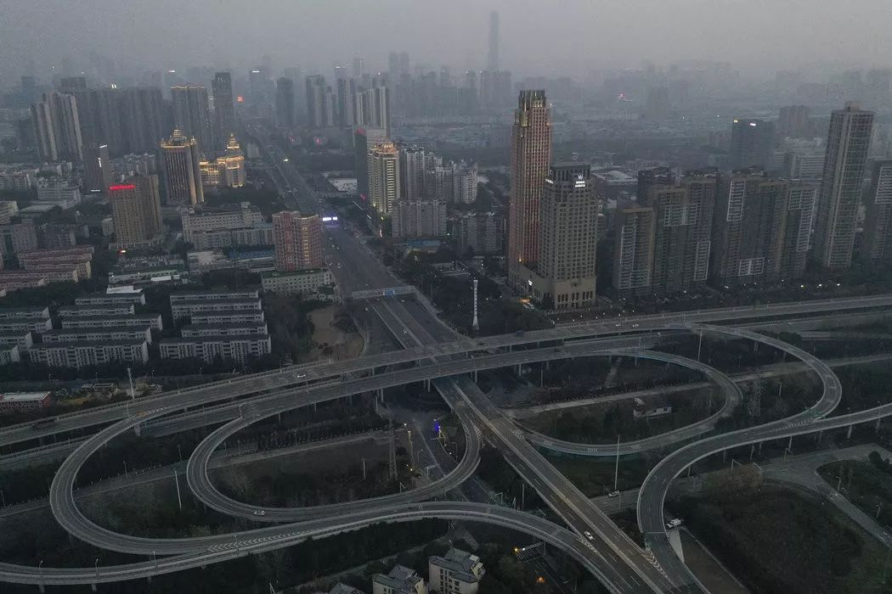
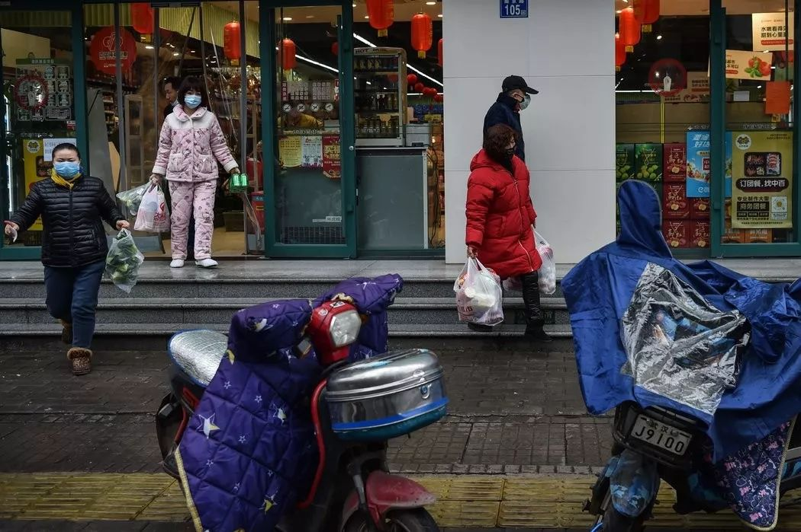

确诊两天后去世，但官方没有他的名字：六个湖北女孩的封城日记
原文链接 备份链接 大家好，我是田静。 这几天因为新型冠状肺炎病毒，我恶补了一些相关书籍，再看网上真假难辨的信息，觉得阿尔贝‧加缪的《鼠疫》中说得很对：“我们每个人心里都有瘟疫，没有一个人，这世界上没有一个人是免除得了的。能够对抗瘟疫的， …

武汉封城仍在继续，平稳的物价，有序的管制，保证了城中百姓的安稳生活，也多少让隔离中的人们陷入了日夜循环的麻痹中，时间概念逐渐模糊。今天，单读作者晓宇的疫区日记继续更新，日记同时发表在晓宇个人公众号：世风（ID：world-views），也在《洛杉矶书评》“中国频道”同步英文连载。

疫区日记 4： 比绝望更糟的是安于绝望
撰文：晓宇
安娜走后，我们失去了时间。曾经她每日和大使馆的联系，消息时断时续，时好时坏。无论怎样，创造时间的延续。一桩我们仿佛在插手参与，又不断发展的事件。事情远没有到尘埃落地的地步。德国撤侨飞机上，发现两名确诊。他们要在军营里待上两周，出来的时间，由一百多人的健康状况决定。多发现一例，隔离时间重记，疫情下的连坐制。
拥有进度和反馈，在封城的日子里，无疑是奢侈的。现在，进度限于每日早上，更新的确诊和死亡人数。我们不大关心疑似和治愈，前者放缓和后者增长，都不足以形成慰藉。我们开始晚睡晚起，三顿减成两顿，虽然不是总能成功。站上体重秤成了一件惊心动魄的事。我醒的不晚，但总会在床上磨蹭一阵，直到隔着走廊，对着父母的卧室喊，今天多少例了，新的一天才开始。
一月二十九日，过万。二月二日，过两万。不愿承认又不可否认，麻木感渐渐蔓延。数字变得抽象，似乎需要更大量级，激起情绪波动。口中谈到“几百”，到了“几千”，到了“上万”，经历早间短暂的战栗后，继续柴米油盐的生活。个体的故事比数字更揪心，然而我们心底明白，数字也是个体遭遇，发生了上万遍。麻木和健忘，成了维系生活的必需。在此之上，还有两种时而闪现的情绪，羞耻和侥幸。羞耻于持续生长的麻木，对同胞不幸的情感透支。侥幸于自己躲过一劫，还有抱怨和愤怒的气力。
▲身穿防护服的医护人员在武汉大学中南医院诊治一名新型冠状病毒确诊患者。图片来源：中国日报/路透社
麻木不仅对人和疫情，它也侵蚀了时间。我们时常忘记今日是哪一天，先是按照公历来记，后来按照农历，两种法子都不奏效，一天看几遍手机提醒自己。白天比晚上更容易睡着，本来作息不规律的人，此时更乱了章法。临到中午才起来，这一天不知地糊弄过去，人也昏昏沉沉。太阳出来后，城市披上一层薄薄的白光，浑浑噩噩的感受更是强烈。昏沉，像是精神上的传染病，在城市里传播。
奇怪的是，车辆近乎消失，工厂停工，空气质量并无改善，盖着往年冬日的霾。人们不禁怀疑环境保护举措的逻辑。如果我们再加上一桩传染病，那就是潜伏四周的怀疑。大家都有点疑神疑鬼。对自己，对邻人。一声喷嚏，提心吊胆半个上午。邻人出门时的踉跄，半夜莫名来的来车，都让我们怀疑对方是否感染。路人，特别指向一人或是一楼，意思是说，那人病了，那楼有发热。手势代替言语，碰到极端需要问候的情况，大家碰肘致意。
二月三日，军队接管了十天建成的医院，接管了交通关卡和生活物资的配送。小区门口出现了平价的蔬菜摊。我们收到免费的蔬菜，三根黄瓜。物价平稳，没有生活上的恐慌，不少人认为这是解放军的功劳。但军队的带来也提醒人们形势的严峻，大家觉得如果疫情减退，便没必要如此大动干戈。好消息总伴着坏消息，坏消息则可以单枪匹马。
无政府主义者没有盼到他们的未来。城中秩序没有因为疫情陷入瘫痪。支援医院货车，因车身不洁，占用人行道，被城管锁住。日常的规则仍然留在紧急状态里。消费停滞了，除了食品开销，没有可以花钱的地方。购买物资，成了唯一合法的出门理由。人们拎着袋子回家时，故意绕远一圈，增加难得的户外时间。没有人就此低估钱和消费的价值。只是当选择有限时，钱也退到次要的地步。人们没有忘却它过去和未来的力量。

▲武汉
父亲成了一名水平欠佳的预言家。封锁初始，他说，这不过是四五天的事。两天后说，这恐怕要是两周。两周变成了三月前，又信誓旦旦地说，这样的情况，最多再过一周。我们没人知道这要持续多久，拐点何时出现，只是清楚，这比最初设想要长。父亲的预言，在两个极端里来回摆动，好像封城可能马上结束，又可能持续上数月之久。如此的极端摇摆，几乎涉及有关疫情的一切。人们有时完全丧失对权力的信任，满腔怒火。有时则信心满满，感动地掉下眼泪。这不是发生在两个不同的人那里，而是在同一个人身上，矛盾地集中，今天和明天，上午和下午，这一秒和下一秒。
我们用琐碎漫长的家务来消耗时间，把食物变成由原料开始的手工。我们延伸着动手自制的范围，馒头，面条，饼干。逐个把床单被罩，拆下来清洗。姥姥坐在桌前，摘了一上午的青菜，红菜苔掐段，抽茎。小区里，有人把车洗了一遍又一遍。可惜，这样的热情维持了一周，便转入颓势，吃穿成了朴素简易，得过且过。我们的食欲也没有开始时的澎湃。我下定决心，洗了头发，刮了胡子，全身上下换了衣服，袜子也是。搬出哑铃，擦了灰，限制了新闻的时间。到了第二天，生活又回到了浑噩之中。像鱼，短暂地出水呼气，又沉入水底。
比起时间的日渐模糊，我更加怀念声音。每一天，我饥饿地寻找房间之外微弱的声音。临近高架和机场，头顶和房前的声音消失了。猫狗继续它们的沉默。午后，短暂听见邻里炒菜，食料入油锅的滋啦，铲子敲击锅边清脆的声响。保安带着喇叭，走过一圈，戴口罩和勤洗手的广播。市民约定八点唱国 歌的夜晚，我打开窗户，满怀期待地按时守候。对我来说，这是独特的延续。三个月前，在黎巴嫩遇全国抗议，不能上街的人约定，晚上在屋里敲击锅碗瓢盆，一到时间，城里就下起金属的雨。他们在那个时候罕见地守时。国 歌没有如期而至，小区一片寂静。最终，只能通过朋友的视频，感受在中心城区的热烈。曲终，喊起武汉加油，有人便哭出声来。这场活动因为担心飞沫传染，没有在第二天继续。
例外是鸟叫，封城后逆向壮大。鸟群重新占领城市，每日巡逻，无所畏惧地掠过头顶。不得不说，这种单调和强势的声音，难以让人喜爱。其它动物在莫名地走向死亡。水沟里出现了猫狗的尸体，毛发和污水搅做一团。湖边接连出现漂浮的死鱼，它们个头不小，五十公分以上，像是停泊的船，沿着岸依次摆放。散步的人，站在湖边观看，没人开口说话。他们像雕像一样立在水边，直到一个孩子说，该不会是得了肺炎吧。大家才面露笑容，一哄而散。渔船开始打捞死鱼，以免引起更多的猜测。三天之后，谜题解开了。母亲目睹了凶杀的现场。白色水鸟，张开翅膀，嘎嘎地飞过水面，猛地缩紧躯体，掉转方向，向水扎下去。鱼奋力地挣扎，水花四溅，最终，血淋淋的鱼体，浮上水面，等待被浪冲至岸边。它们个头太大，水鸟不能叼起，而它们死后，鸟儿也不食。
姥姥说，啄死不吃，真是极大的浪费。她口中的水鸟，是以杀戮为乐的恶毒小人。应该拿网收了这群鸟，她说。你怎么老想着违背自然的事，父亲说。姥姥说，对面树上的鸟在拆窝，一根根枝条，衔走飞离。父亲问，搬家还是别的鸟在偷走建材？姥姥说，这就不知道了。父亲说，该不会是赶上了拆迁，等主人度假回来，发现窝没了！无家可归。过了一阵，它们收工，留下光秃秃的树枝。

▲购买食物储备的居民。图片来源：法新社
进入二月，腊梅开花。每逢夜晚，街灯点亮，浓烈的香气冲到路上。此时在路上的，不是趋向自由，就是奔往死亡。网络让复工成为可能，年轻一代成为家里首批恢复上班的。此时，我们认清回到过去的渺茫，也越来越难想象，疫情的突然结束，没有准备的重新开始。那恐怕会让我们手足无措。但要说怎么准备，也无头绪，只是不愿陷入，陡然的乐观和随即的失望里去。伴着模糊的时间和消散的声音，想象力也不可避免地衰退了。它限于眼前的灾难中，没有足够可靠和坚实的信息，支撑它的伸张。我们开始培育耐心。小心翼翼地不使它落为瞬时的怒气和浑噩的麻木。没人愿意及早地说出希望，虽然我们还没有忘却它。

自征文以来，我们收到了大量来稿，如实写下了他们在疫情期间的所见所闻，这会是一份真挚而沉重的纪录，我们会留存它。
投稿邮箱：anonymous@owspace.com

《单读 23 · 破碎之家》已经上市****
*它又意外地应景了*
***点击小程序购买阅读***
原文链接 备份链接 大家好，我是田静。 这几天因为新型冠状肺炎病毒，我恶补了一些相关书籍，再看网上真假难辨的信息，觉得阿尔贝‧加缪的《鼠疫》中说得很对：“我们每个人心里都有瘟疫，没有一个人，这世界上没有一个人是免除得了的。能够对抗瘟疫的， …
原文链接 备份链接 中国科学院心理研究所的研究员高文斌，是2003年北京小汤山“SARS患者与医护人员的心理干预”项目和“中科院心理所非典心理咨询热线”的负责人。 在接受本刊采访时，他认为，这次新冠疫情，尤其需要加强社会层面的心理引导和 …
原文链接 备份链接 疫情封锁之下，在一座城市中，人们的境遇也各不相同。市民被分隔成微小的个体，以往芜杂的日常生活具体为物资采购和一日三餐。普通人谨小慎微地关注着体温、情绪和城市的变化，试图平复暴风眼周围一丝丝微弱的气流。 作 …
原文链接 备份链接 在第二天的日记里，我说了对轻症患者在家自行隔离的宣传方向所存在的质疑，尚有不少人在评论里争辩，说在医院挤不下的特殊时期，这是可以理解的、不得已而为之的决策。 直到一个多星期后钟南山放话，说居家隔离是非常危险的做法，因为 …
原文链接 备份链接 文/刘雀 编辑/零柒 “都害怕，总得有人往前走一步。” 这是美团买菜武汉融桥站闵捷说的话，他所在站点的马路对面就是疫情定点医院。站点一个员工的咳嗽，就吓退了其他员工，“其实我心里也挺害怕的。我觉得不行，这个工作就摆在这 …